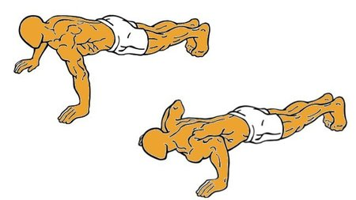

15 flexiones diferentes para trabajar todo el cuerpo sin equipamiento alguno
2021.06.26 11:41
Webedia Trendencias Hombre Menú Nuevo Buscar Facebook Twitter TENDENCIAS CALZADO FITNESS Fitness
15 flexiones diferentes para trabajar todo el cuerpo sin equipamiento alguno
Compartir 15 flexiones diferentes para trabajar todo el cuerpo sin equipamiento alguno
Facebook Twitter Flipboard EmailSuscríbete a Trendencias Hombre
Síguenos Twitter Facebook RSS Sin comentarios 23 abril 2018, 13:01 Gabriela GottauSabemos que las flexiones de brazos son uno de los ejercicios más básicos , populares y al mismo tiempo exigentes que se realiza sin más equipamiento que nuestro peso corporal. Para que puedas aprovechar al máximo este ejercicio, a continuación dejamos 15 flexiones diferentes para trabajar todo el cuerpo sin material .
Con las flexiones no sólo trabajaremos hombros, pectorales y brazos, sino también solicitamos la contracción de músculos de la zona media del cuerpo o core y también, dependiendo de la variante empleada, podemos ejercitar piernas y glúteos.
Se trata de un movimiento multiarticular, de ayuda para perder peso , tonificar, ganar fuerza y control muscular. Aquí XX flexiones diferentes que puedes poner en práctica:
Flexiones clásicas
Son las clásicas push ups , que se realizan alineando el cuerpo de talones a cabeza, con puntas de los pies y palmas de mano en el suelo, éstas últimas separadas del ancho de los hombros y mediante la flexión de los codos o los brazos debemos acercar el pecho al suelo .
Sin quebrar la cintura, sin impulsarnos al subir sino con un movimiento controlado descenderemos y ascenderemos el cuerpo repetidas veces de manera continua.
Si esta posición nos resulta muy intensa, podemos comenzar realizando las flexiones con rodillas apoyadas en el suelo.
Flexiones diamante
Cambiando el apoyo de las manos podemos ya obtener un gran cambio. En este caso debemos unir ambos pulgares en el suelo y ambas puntas de los dedos índice para formar un diamante con nuestras manos .
Apoyamos toda la palma de la mano y elevamos el cuerpo completo, sin quebrar la cintura como nos muestran en Vitónica .
Con este movimiento trabajamos sobre todo la parte superior del pectoral y tríceps , aunque como dijimos antes, también solicitamos la contracción de músculos de la zona media del cuerpo.
Flexiones espartanas
Se realizan con las manos apoyadas en el suelo pero desalineadas , una por delante del hombro en el suelo y la otra por debajo, ambas por los lados del cuerpo.
Comenzamos con los brazos extendidos, realizamos una flexión de codo en esta posición hasta que nuestro pecho roce el suelo y desde allí, cuando los brazos vuelvan a estar casi extendidos, cambiamos la posición de las manos , llevando la que estaba adelante hacia atrás y la que estaba atrás hacia adelante como se puede ver en el siguiente vídeo:
Con este movimiento muy frecuente en Crossfit trabajamos tríceps y pectorales en todas sus porciones además de músculos estabilizadores.
Flexiones sacacorcho
Para trabajar en mayor medida la zona media del cuerpo y sobre todo, abdominales oblicuos podemos realizar esta variante de flexiones que se realiza en una posición diferente , con la cadera elevada y las piernas flexionadas entre 45 y 90 grados , para lo cual, debemos apoyar los pies más cerca de las manos para comenzar el movimiento.
Trabajaremos tríceps y pectorales también, así como flexores de la cadera. Y en este caso, el pecho no debe rozar el suelo al realizar flexiones .
Flexiones tigre
Para estas flexiones debemos apoyar todo el antebrazo y no sólo la palma de la mano para realizar una extensión y flexión de brazos mientras el resto del cuerpo queda alineado de pies a cabeza, sin quebrar la cintura, como se muestra a continuación:
Esta variante es una manera intensa de trabajar los tríceps , quienes deberán elevar y descender todo el cuerpo con su contracción.
Flexiones cobra
En este es una variante un poco menos intensa , ideal para trabajar tríceps principalmente y también, lumbares o espinales.
Nos colocaremos tumbados boca abajo en el suelo y apoyaremos ambas palmas de la manos debajo del pecho , por los lados del mismo. Pero en lugar de despegar el cuerpo entero del suelo, empujaremos con los brazos para elevar sólo el tronco imitando el movimiento de una cobra.
Flexiones escapulares
Si buscamos trabajar la espalda sin equipamiento alguno , podemos ejercitar los músculos de la parte superior de la misma con esta variante.
Se inician en la misma posición que todas las flexiones, pero sólo se movilizan las escápulas para su ejecución como puedes ver en el siguiente vídeo:
Flexiones con palmada
Es una de las flexiones más usadas en Crossfit para quemar calorías y trabajar potencia además de solicitar el esfuerzo de pectorales, tríceps, deltoides y músculos de la zona media del cuerpo.
Como su nombre lo indica, consiste en con cada ascenso del cuerpo dar una palmada o unir ambas manos debajo del pecho antes de volverlas a apoyar en el suelo y descender el cuerpo que siempre debe estar alineado de pies a cabeza .
Flexiones en posición supina
Para trabajar sobre todo la espalda , concentrando el esfuerzo en la parte superior de la misma podemos ejecutar esta variante que se inicia tumbados boca arriba, con los brazos flexionados y apoyados en el suelo, perpendiculares al tronco como puedes ver en Vitónica .
Desde allí, empujamos para despegar los brazos y espalda alta del suelo y regresamos a la posición inicial de forma controlada antes de repetir el movimiento.
Flexiones rana
Realizando tras cada repetición de flexión de brazos un salto con ambas piernas juntas hacia adelante , imitando el salto de rana, y quedando con los pies por los lados del cuerpo, con piernas flexionadas podemos realizar esta variante como puedes ver a continuación:
Trabajaremos con esta opción además de tren superior y zona media, cuádriceps, glúteos y otros músculos de las piernas . Asimismo, quemaremos calorías.
Flexiones delfín
Las dolphin pushups o flexiones delfín se inician con los antebrazos en el suelo , las palmas de las manos unidas entre sí y el cuerpo en forma de "V" invertida, por lo que los pies deben estar más cerca del tronco.
Con la espalda recta en todo momento , descenderemos el tronco para alinear el cuerpo y colocarlo paralelo al suelo. Los hombros deben bajar hasta quedar cerca de las muñecas y la barbilla debe posicionarse más allá de las manos que se encuentran en el suelo, como se puede ver en este vídeo .
Es un movimiento que trabaja tríceps, hombros, pectorales y zona media del cuerpo al mismo tiempo.
Flexiones hindú
Con la cadera elevada también podemos realizar esta variación de flexiones de brazos que trabaja tren superior, zona media y también, tren inferior en menor medida .
Como se muestra en el siguiente vídeo las palmas de las manos y puntas de los pies deben estar en el suelo, separados entre sí poco más allá del ancho de los hombros, iniciamos el movimiento descendiendo el tronco y llevándolo al mismo tiempo hacia adelante. Inmediatamente se revierte el gesto:
Flexiones verticales invertidas
Tal como posicionarnos al revés, y teniendo como apoyo en el suelo las manos en lugar de los pies ejecutamos una flexión de brazos para descender todo el cuerpo alineado verticalmente como puedes ver en Vitónica .
Se trata de un movimiento muy intenso, requiere mucha fuerza en brazos y hombros así como en la zona media del cuerpo y demanda un gran control y coordinación muscular.
Flexiones spiderman
Es una variante más que trabaja tren inferior y superior al mismo tiempo y que consiste en acompañar cada flexión de brazos del movimiento de una pierna.
Despegamos con cada repetición un pie del suelo y acercamos la rodilla (flexionada) por el lado del cuerpo , al codo que se encontrará también flexionado como puedes ver a continuación:
Flexiones en T
Es una combinación de flexiones con plancha o puente lateral por lo que esta opción trabaja mucho más la zona media o core que las anteriormente mencionadas.
Con cada flexión que terminamos despegamos una mano del suelo para ponernos en posición de puente lateral con el brazo despegado del suelo perpendicular al tronco y dirigido hacia arriba .
En el siguiente vídeo puedes ver su técnica de ejecución:
Ya vemos que si buscamos trabajar diferentes partes del cuerpo al mismo tiempo, podemos lograrlo con un ejercicio básico y sus variantes como estas 15 flexiones de brazos que hemos mostrado. ¡No hay excusas! ¿te animas a probarlas?
Vídeo | Hard Candy Fitness Russia , Livestrong.com , Andrew Sacks , HealthRidgeFitness , P4PEspañol , Ejercicios en casa .
Imagen | iStock
Vitónica en Instagram
Seguir
Compartir 15 flexiones diferentes para trabajar todo el cuerpo sin equipamiento alguno
Facebook Twitter Flipboard E-mail Temas Fitness abdominales pectorales flexiones BrazosCompartir
Facebook Twitter Flipboard E-mail Comentarios cerrados Temas de interés ejercicios de espalda moda hombre 2019 ejercicios abdomen dress code ejercicios triceps calorías en un kilo zapatos de moda hombre comer después de entrenar Zara Primark Mango caipiriña piña colada Inicio Chicas Lifestyle Calzado Estilo de la semana Tendencias Fitness Cosmética El mejor street-style de la semana Ideas para el Día del Padre moda hombre entrenamiento abdominalesVer más temas
Síguenos Twitter Facebook RSS E-mail Lo mejor Equipo editorial Contacta con nosotrosMás sitios que te gustarán
Xataka Applesfera Xataka Android Vitónica PoprosaExplora en nuestros medios
Tecnología Móviles, tablets, aplicaciones, videojuegos, fotografía, domótica Xataka Xataka Móvil Xataka Foto Xataka Android Xataka Smart Home Xataka Windows Xataka Ciencia Applesfera Genbeta Magnet Mundo Xiaomi Videojuegos Consolas, juegos, PC, PS4, Switch, Nintendo 3DS y Xbox 3DJuegos Vida Extra IGN Millenium Entretenimiento Series, cine, estrenos en cartelera, premios, rodajes, nuevas películas, televisión Sensacine Espinof Gastronomía Recetas, recetas de cocina fácil, pinchos, tapas, postres Directo al Paladar Estilo de vida Moda, belleza, estilo, salud, fitness, familia, gastronomía, decoración, famosos Vitónica Trendencias Trendencias Hombre Decoesfera Compradiccion Poprosa Latinoamérica Publicaciones de México Xataka México Directo al Paladar México Sensacine México 3DJuegos México Aviso legal Condiciones de uso Condiciones de uso de cookies Publicidad InicioReciente
Los protectores solares que no pican en los ojos y resisten los deportes náuticos De rebajas en El Corte Inglés: las once piezas que necesitas sí o sí para llenar tu armario de básicos a precios únicos Vuelve ‘Sky Rojo’, se estrena ‘La calle del terror’ y mucho más: todas las series, películas y documentales de Netflix en julio de 2021 en Trendencias Louis Vuitton presenta su colección de primavera 2022 'Amen Break' debutando una nueva colaboración con Nike Ralph Lauren debuta en el mundo de los e-sports vistiendo a los miembros del G2 team Nueve zapatillas de adidas originals para aprovechar sus rebajas de hasta con un 50% Lo mejor de las rebajas de Springfield con éstas nueve piezas para veranear con estilo Rebajas en H&M: nuestra selección de las mejores piezas con descuento del momento Las camisas estampadas imponen su ley en las calles de Milán Siete piezas de JOMA que encontrarás en el Prime Day de Amazon por menos de 15 euros Últimas horas del Prime Day en Amazon: la sandwichera de Taurus para preparar los bocadillos más deliciosos por menos de 18 euros en Directo al Paladar Las grasas pueden ayudarte a perder peso: cuáles elegir para facilitar el adelgazamiento Armani, Polo Club, Hackett tus sudaderas y jerséis favoritos serán de marca premium con éstas ofertas del Prime Day de Amazon Los más bonitos relojes de Fossil, Michael Kors, Armani y más marcas top a un precio de lujo en el Prime Day de Amazon Jack & Jones, Tommy Hilfiger, BOSS y más marcas de ropa interior a precio increíble en el Prime Day de Amazon Chaquetas, cortavientos, polares y sudaderas de Helly Hansen a precios súper rebajados en el Amazon Prime Day 2021 Levi's, Dockers, Lee: las mejores ofertas en vaqueros y otros pantalones en el Prime Day de Amazon Pepe Jeans, Tommy Hilfiger y más: nueve toallas para la playa o la piscina con las que empezar las vacaciones de verano Recortadoras de barba y depiladoras: las mejores ofertas en cuidado corporal y facial en el Prime Day 2021 de Amazon Amazon Prime Day: grandes ofertas en relojes deportivos Garmin, Polar y Fitbit en VitónicaVer más artículos
Síguenos Twitter Facebook RSSEn Trendencias Hombre hablamos de
Chicas Lifestyle Calzado Estilo de la semana Tendencias Fitness Cosmética El mejor street-style de la semana Ideas para el Día del Padre moda hombre entrenamiento abdominalesVer más temas
SubirWebedia
Tecnología
Xataka Xataka Móvil Xataka Foto Xataka Android Xataka Smart Home Xataka Windows Xataka Ciencia Applesfera Genbeta Magnet Mundo XiaomiVideojuegos
3DJuegos Vida Extra IGN MilleniumEntretenimiento
Sensacine EspinofGastronomía
Directo al PaladarEstilo de vida
Vitónica Trendencias Trendencias Hombre Decoesfera Compradiccion PoprosaLatinoamérica
Xataka México 3DJuegos México Sensacine México Directo al Paladar México Webedia Xataka Vida Extra Espinof Genbeta Directo al Paladar Xataka Ciencia Trendencias Applesfera Xataka Móvil Decoesfera Vitónica Xataka Foto Trendencias Hombre Xataka Android Xataka Smart Home Xataka Windows Magnet Compradiccion 3DJuegos Sensacine IGN Millenium Poprosa Mundo XiaomiTecnología
Xataka Xataka Móvil Xataka Foto Xataka Android Xataka Smart Home Xataka Windows Xataka Ciencia Applesfera Genbeta Magnet Mundo XiaomiVideojuegos
3DJuegos Vida Extra IGN MilleniumEntretenimiento
Sensacine EspinofGastronomía
Directo al PaladarEstilo de vida
Vitónica Trendencias Trendencias Hombre Decoesfera Compradiccion Poprosa